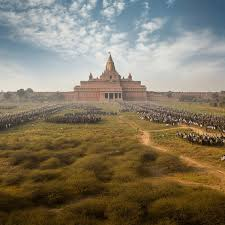
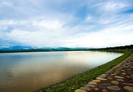
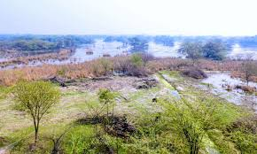
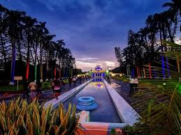
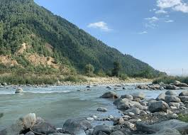

Kurukshetra

A city of great historical and religious importance, considered the battlefield of the epic Mahabharata. It features the holy Brahma Sarovar and the Jyotisar (where Lord Krishna delivered the Bhagavad Gita).
Sukhna Lake

A serene reservoir at the foothills of the Shivalik range, popular for boating, jogging, and as a spot for relaxation and scenic views.
Sultanpur National Park

Primarily a bird sanctuary, it's a popular destination for bird watchers, especially during the winter season when numerous migratory birds visit.
Yadavindra Garden

A beautiful 17th-century Mughal-style garden, also known as Pinjore Gardens, noted for its tiered structure, fountains, and historical architecture.
Panchkula

A planned city known for its green spaces, proximity to the Shivalik Hills, and the ancient Mata Mansa Devi Temple, a significant Hindu pilgrimage site.